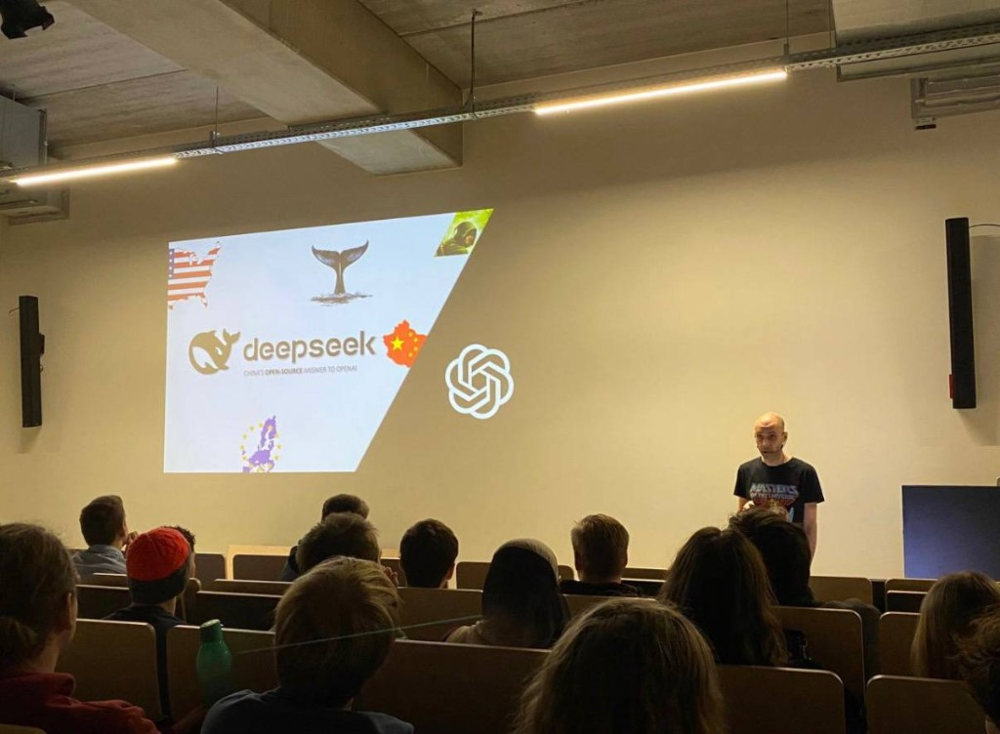
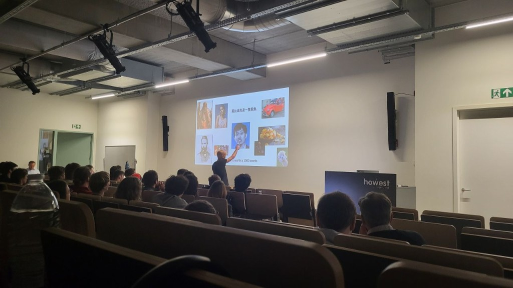

Tech&Meet — where LLMs are heading

Open vs closed ecosystems — and who actually pays for compute.
Last week I attended Tech&Meet at Howest, and two things really shifted how I think about where large language models are heading. The session was not a product demo; it was a tour of constraints, architectures, and trade-offs that matter if you build or defend systems that will rely on AI in the next few years.
Do more with less
First: “do more with less” is no longer a slogan — it is an engineering advantage. Seeing how modern models can stay competitive despite weaker GPU access — by optimising training and inference and activating only the parts of a model that are needed — made it clear that efficiency can rival raw compute. That resonates in cybersecurity too: the defender with better architecture and selective depth often beats the side that only bought more metal.
MoE-style thinking (sparse activation, routing experts only when required) is not academic trivia. It is how you keep latency and cost under control when you cannot assume unlimited NVIDIA budgets — whether you are a startup, a university, or a national programme weighing export controls on chips.

Context as image: a slide worth more than a wall of tokens.
Context as image, not only text
Second: the idea of representing context as an image instead of plain text felt genuinely disruptive. If models can consume richer, more compressed context directly — rather than constantly converting image → text → processing — that could change how we build assistants for complex environments: security operations centres, incident timelines, layered network diagrams, and dashboards where the layout itself carries meaning.
We still default to dumping logs into strings. A visual-native pipeline might preserve structure that gets lost the moment everything is flattened to prose. I am sceptical until I test it, but the direction is worth watching.
Open vs closed — and the real bill
The DeepSeek framing on screen — China’s open-source answer to closed frontier labs — fed the debate I keep having as a cybersecurity student. Open vs closed is not only philosophy. You might gain transparency and self-hosting options with open weights, but hosting and compute are still the price tag, paid in money, hardware, electricity, or governance. Someone runs the cluster; someone patches the model; someone answers when data leaves your jurisdiction.
Closed APIs outsource that bill to a vendor contract. Open weights push it back to your ops team. Neither removes risk — they redistribute it. For defence and critical infrastructure, that redistribution is the entire conversation.
I left Tech&Meet with more questions than answers, which is the best outcome for this kind of evening: less hype, more engineering and economics. I will follow how Howest keeps surfacing topics that sit at the edge of computer science and real-world security work.